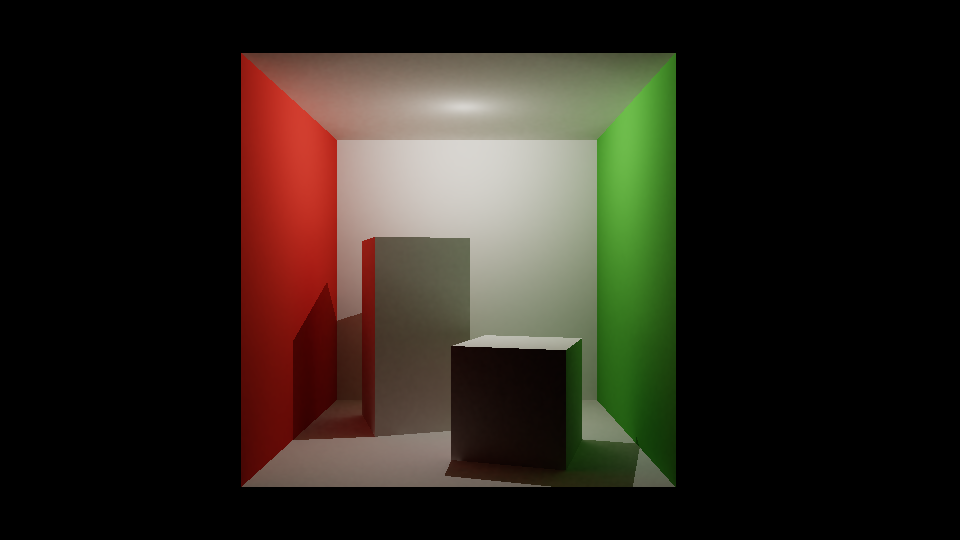
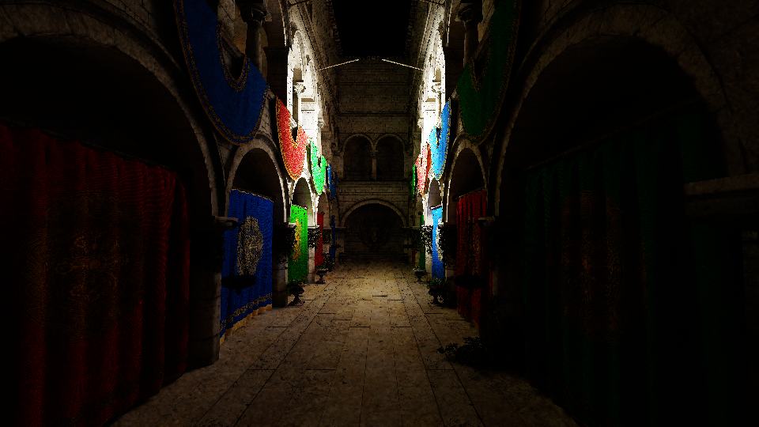

2026-11-19。已编译并验证 CornellLambert、SponzaLambert。此记录验证新路径可运行，不是充分收敛的 DDGI / PT 画质或性能对比。
本地源文件位于 D:/Unreal/UnrealEngine/Engine/Source/Runtime/Renderer/Private/Lumen/LumenWorldCache.cpp、.h，以及 Engine/Shaders/Private/Lumen/LumenWorldCache.ush、LumenWorldCacheTracePaths.usf、LumenWorldCacheUpdate.usf。LumenHardwareRayTracingCommon.ush 中 CalculateSurfaceCacheLighting 在启用 WorldCache 时读取它，替换 Surface Cache 的表面出射亮度。
它与 LumenRadianceCache 不同，也不是本项目之前用来合并 DDGI 探针射线着色的 WorldRadianceCache。新路径不分配或更新 DDGI 探针。
GBufferRT
├─ WorldCacheUpdate
│ ├─ CachePaths：每 8×8 屏幕区域选一个随机 GBuffer 像素
│ │ 追踪 3 个漫反射更新顶点，最后再追一段用于读取旧缓存
│ └─ CacheResolve：合并同一 cell 的样本，时间混合、清空累加器、淘汰旧项
├─ PrimaryShading：直接光、发光表面、背景
└─ HalfGather：沿用原来的半分辨率 FG，在命中点查询 WorldCache
↓
DDGIReconstruct：沿用深度/法线引导重建
↓
AccumulatePass → ToneMapper
WorldCache 更新与 FG 查询是独立阶段。为复用 Falcor 的材质、光追绑定和既有 FG，首版仍托管于 RTXGIDDGI 插件；新图和 UI 的 pass 名为 WorldCache。实现分别位于 LumenWorldCache.cpp、LumenWorldCache.slang、LumenWorldCacheTrace.slang、LumenWorldCache.cs.slang。
缓存键包含世界坐标 cell、距离层级和几何法线六方向分类；表容量 2²⁰，最多探测四个槽位。默认历史长度 16 次有效帧更新，64 帧未更新淘汰。更新顶点采用：
L_new(y) = emission(y) + analytic_direct_diffuse(y) + albedo(y) × L_previous(z) z ~ cosine hemisphere at y L_cache = lerp(L_cache, mean(L_new), 1 / min(history + 1, 16))
缓存保存总漫反射出射 radiance；FG 不再重复添加命中点的直接光或再乘一次 albedo/π。发光几何和环境通过延续射线估计，直接光 NEE 只包含解析光源，避免双计。多帧反馈能传播更多次反弹，3 个更新顶点并不意味着最终 GI 只包含三次反弹。
960×540 输出、480×270 FG，预热 512 帧，随后 Accumulate 1024 帧。抓图输出在累积前就注册，避免重编译打断累积。以下命中率包括更新路径和 FG 查询，不是仅 FG 的命中率。耗时是该小规模验证的 GPU 平均时间（ms），不能直接与旧 1080p 报告相比。
| 场景 | 查询命中率 | 有效 cell | 缓存更新 | Half FG | 完整 Graph |
|---|---|---|---|---|---|
| CornellLambert | 100.00% | 1,437 | 0.085 | 0.033 | 0.270 |
| SponzaLambert | 99.75% | 63,139 | 0.166 | 0.118 | 0.640 |
两场景 HDR 均为有限值；探针总数、探针更新数均为零；原 DDGI 路径仍正常更新探针。已检查全／半分辨率、采样偏移、缓存冻结与重置、镜头移动、401×301 尺寸切换及点光源／方向光切换。Sponza 所有灯光关闭后 HDR 全零。脚本：tests/ddgi/world_cache_smoke.py；数据：validation.json。


以上是接入预览，尚未验证对 PT 的收敛误差，也未证明优于 DDGI。缓存空间平均、缺失条目和有限历史仍可能引入偏差。
Run-Falcor 中选择 WorldCache 和 CornellLambert／SponzaLambert；也可在 Active Graph 选择 LumenWorldCache。默认半分辨率 FG、Accumulate 开启。WorldCache → Final gather 可以切换 Half / Full；Accumulate → Enabled 控制屏幕累积。